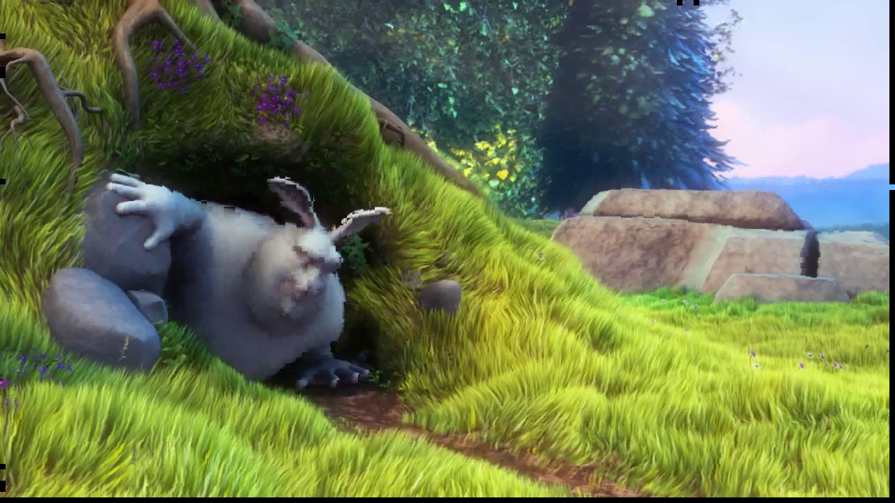

skvideo.motion is a module currently supporting block motion estimation and compensation routines.
To estimate a block motion field, simply use skvideo.motion.blockMotion
import skvideo.io
import skvideo.motion
import skvideo.datasets
videodata = skvideo.io.vread(skvideo.datasets.bigbuckbunny())
motion = skvideo.motion.blockMotion(videodata)
print(videodata.shape)
print(motion.shape)
Output:
(132, 720, 1280, 3)
(131, 90, 160, 2)
By default, skvideo.motion.blockMotion uses 8x8 pixel macroblocks and the diamond search algorithm.
Use skvideo.motion.blockComp to use the computed block motion vectors for motion compensation
import skvideo.io
import skvideo.motion
import skvideo.datasets
# compute vectors from bigbuckbunny
videodata = skvideo.io.vread(skvideo.datasets.bigbuckbunny())
motion = skvideo.motion.blockMotion(videodata)
# compensate the video
compmotion = skvideo.motion.blockComp(videodata, motion)
Here is a motion compensated frame from bigbuckbunny
Typically, estimating the global motion (sometimes referred to as ego-motion) is not as simple as averaging the block motion vectors. Many techniques have been devised to estimate global motion robust against moving foreground objects and noise. The function skvideo.motion.globalEdgeMotion uses edge-based techniques for estimating global motion, with the option to compute error using either the Hausdorff or Hamming distances.